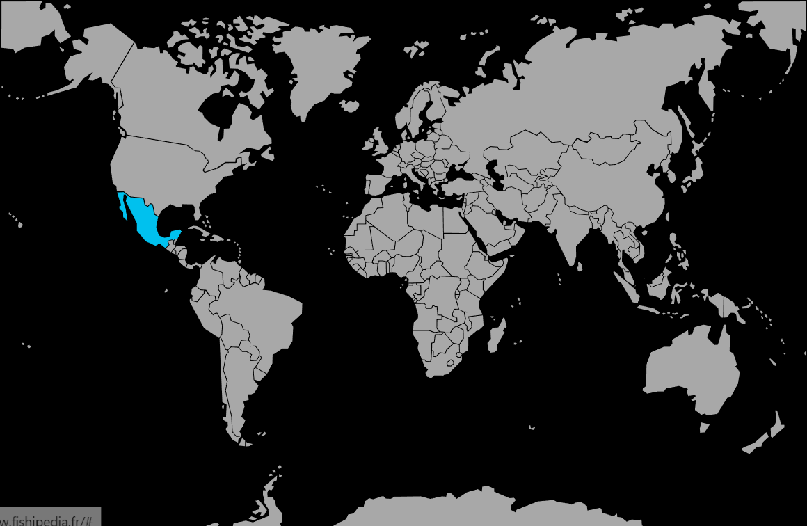

Systématique
- Ordre : Cyprinodontiformes
- Famille : Poeciliidae
- Genre : Xiphophorus
- Espèce : Xiphophorus nezahualcoyotl
Xiphophorus nezahualcoyotl, parfois appelé xipho des montagnes, est un petit vivipare sauvage vivant dans des ruisseaux frais et rapides du Mexique.
Les adultes atteignent environ 4 à 6 cm, avec un corps fin, des lignes sombres en zigzag sur les flancs et une caudale ornée d’un prolongement en forme d’« épée » chez les mâles.
L’espèce vit en groupe dans des ruisseaux bien oxygénés, occupant surtout la zone médiane et se tenant volontiers dans le courant près des zones rocheuses.
Les mâles peuvent poursuivre les femelles de façon insistante, d’où l’intérêt de maintenir davantage de femelles et de prévoir des refuges visuels.
Mode : vivipare ; la femelle donne naissance à une quinzaine à quelques dizaines d’alevins bien formés après une gestation d’environ 3 à 4 semaines.
Les adultes pouvant consommer une partie des jeunes, un bac bien planté ou la séparation de la femelle proche du terme augmente le nombre de survivants.
Dimorphisme sexuel : mâle plus petit et coloré, avec gonopodium et extension caudale ; femelle plus grande, sans épée, silhouette plus arrondie.
Espérance de vie : généralement 3 à 5 ans en aquarium, avec une eau fraîche bien oxygénée et des variations saisonnières modérées.
Dans la nature, Xiphophorus nezahualcoyotl habite des ruisseaux de montagne clairs et bien oxygénés du bassin du Rio Tamasi, sur fonds rocheux ou graveleux, avec courant vif et végétation marginale.
Répartition
Origine naturelle :
- Mexique, bassin du Rio Tamasi dans l’État de San Luis Potosí, au sein du bassin du Rio Pánuco.
- Ruisseaux de montagne à courant rapide, jusqu’à environ 1 200 m d’altitude, souvent associés à des zones rocheuses couvertes d’algues.
L’espèce fréquente des eaux fraîches, bien oxygénées, aux températures modérées, ce qui doit être reproduit en aquarium en évitant les températures trop élevées et en assurant un bon brassage.
Paramètres de maintenance
Température : 19 à 26 °C, optimum autour de 22–24 °C.
pH : environ 6,8 à 7,5, eau neutre à légèrement basique.
GH : 5 à 12 °dGH, eau douce à moyennement dure.
Courant : modéré à soutenu, avec forte oxygénation et changements d’eau réguliers pour imiter un ruisseau de montagne.
Volume conseillé : à partir d’environ 80–100 L pour un petit groupe, avec une bonne longueur de nage et un décor rocheux.
Régime alimentaire
Régime : omnivore à forte part algale ; broute les algues et le biofilm sur les pierres et accepte flocons, micro‑granulés, légumes verts pochés et petites proies vivantes ou congelées.
Une alimentation variée, riche en végétaux et distribuée en plusieurs petites prises, soutient sa vitalité et sa reproduction tout en limitant les problèmes digestifs.